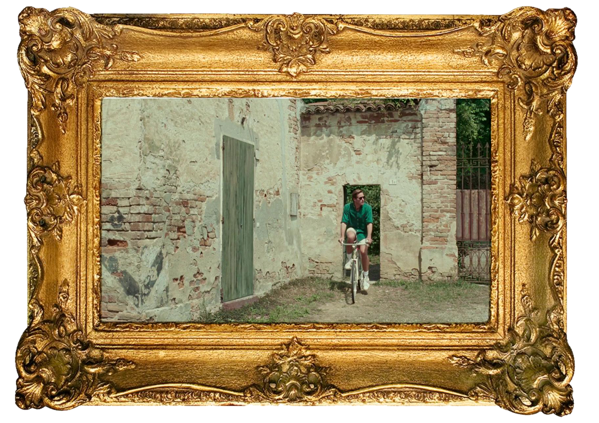
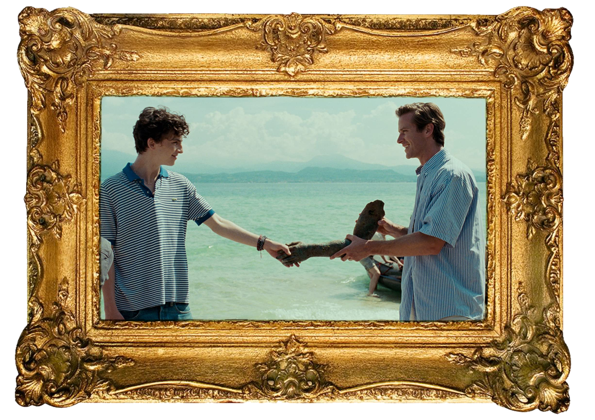

In My Own Words
Call Me By Your Name: Movie Insights
Luca Guadagnino's coming-of-age romantic drama film, Call Me By Your Name, is a cinematic triumph. The masterful cinematography provides ethereal landscapes that lay the setting for a sensual romance. The movie is based off of André Aciman’s novel which chronicles the romantic relationship between 17-year old Elio Perlman and Oliver, a 24 year old graduate student staying with Perlman’s family for the summer.
Call Me By Your Name is one of those rare films where every aspect of the movie is beautiful, from the scenery to the actors themselves. Guadagnino’s commentary on the film’s origins illuminate the depth and complexity of the story. He wanted the film to be about “the beauty of the newborn idea of desire” and hope the audience would “feel first love” and “powerful universality, because the whole idea of the movie is that the other person makes you beautiful—enlightens you, elevates you."
Perhaps the most alluring element of this film for me is the cinematography. Sayombhu Mukdeeprom is the director of photography for the film. His philosophy towards film is simple yet elegant. Mukdeeprom incorporates realism into his films and tries to utilize the environment and lighting of the set. His tasteful manipulation of lighting manages to bask all of the actors in this glowing, honeyed radiance. Mukdeeprom typically focuses on using natural light. Surprisingly, northern Italy is not always sunny and shrouded in golden hues, remaining blissfully ignorant to the complaints of many tourists. Shockingly enough, the shooting for the film was done in five weeks of filming in heavy rainstorms, described by weather reporters as a “once-in-a-century-rain.” As a result, Mukdeeprom was forced to use a few bright artificial light sources to replicate sunshine. Another key element to Mukdeeprom’s style is his refrain from moving the camera to an excessive amount of angles. Throughout the movie, you will find that oftentimes when shooting dialogue between the main characters, the camera stays in one angle, allowing an observer’s point of view of the scene. These elements allowed the scenes to look genuine and natural. Mukdeeprom shot on a single Kodak 35 mm camera with one lens and one filmstock for the entirety of the film. This camera enhanced the cinematic and vintage qualities of the film by adding a subtle grain, and is consistent with Guadagnino’s previous two films. Mukdeeprom edited the scenes after they were shot to focus on neutral tones that were never too loud for the eyes.
The amazing soundtrack for Call Me By Your Name makes for a well-rounded movie that enhances the film’s visuals. Elio’s skills for piano playing and transcribing music are highlighted continuously throughout the film. Guadagnino played off that fact and implemented a constant piano motif. John Adams’ “Hallelujah Junction (1st Movement)” is a sparkling, repetitive piece that adds energy and movement to frozen imagery. Its frequent appearance provides continuity for the film’s soundtrack and is coupled with other famous piano works. When I first saw the trailer, I smiled when I heard Ravel’s “Une Barque sur L’Ocean”. This impressionistic piece compliments the dreamy summer scenes of northern Italy perfectly. Three original recorded songs were also included for the film’s soundtrack. Guadagnino contacted American singer-songwriter Sufjan Stevens to write an original song for the movie and ended up writing three: “Mystery of Love,” “Visions of Gideon,” and “Futile Devices (Doveman Remix)”. Stevens’ “Mystery of Love” is wistful and fitting for the movie. I was familiar with Stevens a couple years before the film was released and I was pleasantly surprised to find his work in the soundtrack.
Call Me By Your Name will undoubtedly become one of the most noteworthy and profound films of our generation. The actors’ sensitive and impressive performances will leave viewers breathless and shattered. In light of the success of the film, author André Aciman quickly wrote a sequel to Call Me By Your Name titled Find Me which takes place ten years after Elio and Oliver’s summer romance. Talk of a sequel film has quickly died down as both Guadagnino and Armie Hammer hope to wait a few years until the actors have aged a bit to revisit filming for the sequel. As for now, fans of the film can only hope that the fleeting closure the ending provides can justify the turmoil of emotions that love brings, not only for Elio and Oliver, but for ourselves.